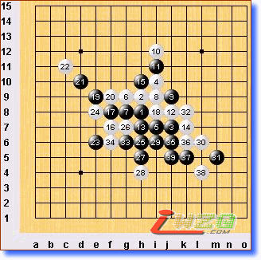
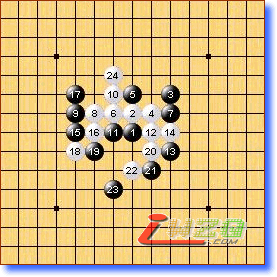
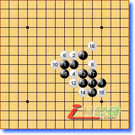
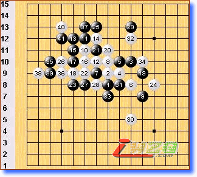
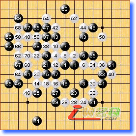

第一局 黑方 okabe 白方 oll 黑胜
或许oll前两轮比的不理想，因此本轮采用冒险策略。可惜这个白4日本棋手很熟悉，奈良八段早年常用，后与中村对局中被必胜（可查阅九三年左右的日本连珠社期刊《连珠世界》），此后日本高水平对局中此变例几乎绝迹。oll的白10略作变化，局面较中村的那种胜法稍微复杂些，但大体思路差不多。白32先10g，7d做交换再防32可解眼前的黑方vcf，但只是五十步与百步的差异。

第二局 黑方 lio 白方 yamaguchi（山口） 白胜
此局是在两位日本棋手间进行，二人相当熟悉。lio是山口网站慢棋对弈的常客。双方实战至黑7与山口VS河村名人战一局相同，不同的是那局山口执黑。17是不安分的一手，没想到被18简单一防黑已必败！如17坚实的防，胜负之路还相当漫长。

第三局 黑方 Savrasova 白方 吴镝 黑胜
大概是误算了吧，希望吴镝调整好心态继续努力。

第四局 黑方 Sushkov 白方 karlsson 黑胜
本局karlsson一反常态，开局就显得积极主动。双方进行至黑9与银月定式类似（有盘端差异），白10以下至18局部似乎不错，可是被19牵制后一时并无好的攻击手段，同时黑棋左右都留有余味，白棋不好处理。21坚实！以下白棋尽量想处理好两块黑棋，24试图先解燃眉之急。sushkov的29细腻，白30似乎已经无法忍受继续防守，这步棋是局面恶化的疑问手。34最后的败招，35轻妙的一击必胜！34－9j似乎还能勉强支撑一下危局。

第五局 黑方 chingin 白方 kozhin 黑胜
俄罗斯棋手好像偏爱流星，kozhin选择一打可见对白棋有信心。实战黑棋并未占得多少便宜，二人大混战。棋局早早趋向和棋，经过五个小时的苦斗，chingin利用白棋一次低级失误获胜。如白70注意到下面黑棋的简单胜，那么应该能守和的。
